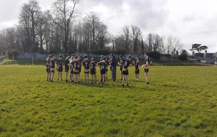

Sport’s within Sancta Maria College
Published on: 23/01/2023
Written by Maggie Loughran

The first school term provided to be a very productive one for the Juvenile boys Gaelic Team coached by Mr Davitt, with wins recorded
over Achill and Ballina, which means the boys have now qualified for the semi-final of the O’haire Cup. The opposition for the
semi-final is not yet known, but it is hoped the game will be played over the coming weeks.
The Connacht Juvenile Boys championship will also commence in early February.
The students of Sancta Maria College Louisburgh have had Wednesday evenings to do what we call “WOW”. This stands for wellness on Wednesdays,
this means students can pick a sport or hobby and spend an hour doing them. There are many sporting choices including, badminton, volleyball,
running, GAA, football, rugby and walking. Junior rugby game 11th January 2023.
The Junior rugby team played against Enniscrone on Wednesday, after a very tough game in the wind, the enniscrone team won 25 to 5. The
team were very disappointed but their Captain Ben Gavin thinks that with some more training, in line speed and tackle they will have a
better chance of winning in the future.
The schools badmington WOW class, got gifted a kit bag by Badminton Ireland. This will be a huge benefit for the WOW class.